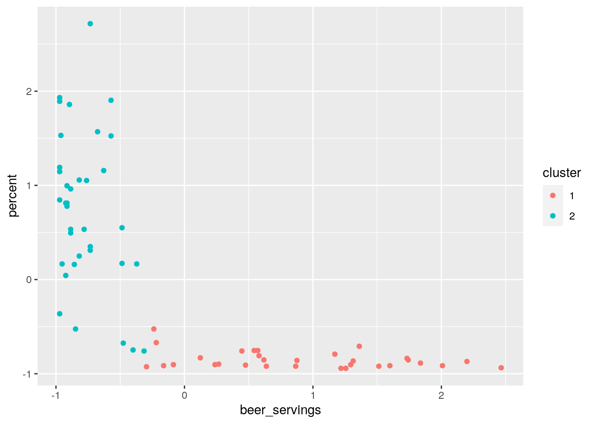

The two data sets that I have chosen are drinks and cousin_marriage. The drinks data set contains information on the total servings of different alcohols and the total liters of pure alcohol consumed by different countries. All of these are numeric variables and are presented as ‘beer_servings’ for the average number of beer servings per person in each country, ‘wine_servings’ for the average number of wine servings per person in each country, ‘spirit_servings’ for the average number of spirit servings per person in each country, ‘total_liters_of_pure_alcohol’ for the average total liters of pure alcohol per person in each country . The cousin_marriage data set contains information on the percentage of people in the country that engage in some form of cousin marriage. The percentage of cousin marriages per country is given by the numeric variable ‘percent’. These data sets were acquired from the ‘fivethirtyeight’ package. These two data sets are very interesting to me, since I have always been intrigued as to why people marry their cousins. The main thing that I am trying to answer from doing this project, is to see if their is any correlation between servings of different drinks (beer, spirit, wine) or the total liters of pure alcohol consumed and the percentage of cousin marriage per countries. In simpler terms, I believe there will be a potential positive association between the amount of some alcohol consumed and the liter amount of pure alcohol consumed per country and the percentage of cousin marriage per country
library(tidyverse)## ── Attaching packages ─────────────────────────────────────── tidyverse 1.3.0 ──## ✓ ggplot2 3.3.3 ✓ purrr 0.3.4
## ✓ tibble 3.0.4 ✓ dplyr 1.0.2
## ✓ tidyr 1.1.2 ✓ stringr 1.4.0
## ✓ readr 1.4.0 ✓ forcats 0.5.0## ── Conflicts ────────────────────────────────────────── tidyverse_conflicts() ──
## x dplyr::filter() masks stats::filter()
## x dplyr::lag() masks stats::lag()library(dplyr)
library(fivethirtyeight)## Some larger datasets need to be installed separately, like senators and
## house_district_forecast. To install these, we recommend you install the
## fivethirtyeightdata package by running:
## install.packages('fivethirtyeightdata', repos =
## 'https://fivethirtyeightdata.github.io/drat/', type = 'source')data(drinks)
data(cousin_marriage)
cousin_marriage## # A tibble: 70 x 2
## country percent
## <chr> <dbl>
## 1 Burkina Faso 65.8
## 2 Kuwait 51.7
## 3 Nigeria 51.2
## 4 Pakistan 51
## 5 Sudan 50.4
## 6 Kyrgyzstan 45.2
## 7 Qatar 44.5
## 8 Bahrain 44.4
## 9 Saudi Arabia 38.4
## 10 Tanzania 37.8
## # … with 60 more rowsfather <- full_join(cousin_marriage, drinks, by="country")
father2 <- father %>% na.omit
#Here I am combining the three servings (beer, wine, spirit) to create a new variable called "total_serving_of_alcohol" using mutate. I found the median of the new variable and used that with 'case_when' to make it into a categorical variable. There are three specific categories of "high", "med", "low", based on the median calculated.The join that I used to merge the ‘drinks’ and ‘cousin_marriage’ data sets was a full join. I made the merge occur by joining them with their “country” ID/column, since it is shared by both data sets. The reason I decided to do a full join is because I wanted to simply combine both data sets and keeps all of the rows from both. With the full join, 126 rows from the ‘drinks’ data set were lost and 3 rows from the ‘cousin_marriage’ data set were lost, since these were the rows that didn’t have a “country” ID match together. This didn’t create any problems since their were still over 50 observations, and most of the information from the ‘cousin_marriage’ was maintained.
#A. creating a categorical variable with mutate
father2 %>% mutate(total_serving_of_alcohol = beer_servings+wine_servings+spirit_servings)## # A tibble: 67 x 7
## country percent beer_servings spirit_servings wine_servings total_litres_of…
## <chr> <dbl> <int> <int> <int> <dbl>
## 1 Burkin… 65.8 25 7 7 4.3
## 2 Kuwait 51.7 0 0 0 0
## 3 Nigeria 51.2 42 5 2 9.1
## 4 Pakist… 51 0 0 0 0
## 5 Sudan 50.4 8 13 0 1.7
## 6 Kyrgyz… 45.2 31 97 6 2.4
## 7 Qatar 44.5 1 42 7 0.9
## 8 Bahrain 44.4 42 63 7 2
## 9 Saudi … 38.4 0 5 0 0.1
## 10 Tanzan… 37.8 36 6 1 5.7
## # … with 57 more rows, and 1 more variable: total_serving_of_alcohol <int>father3 <- father2 %>% mutate(total_serving_of_alcohol = beer_servings+wine_servings+spirit_servings)
father3 %>% summarize(median(total_serving_of_alcohol))## # A tibble: 1 x 1
## `median(total_serving_of_alcohol)`
## <int>
## 1 141father41<-father3 %>%mutate(total_serving_of_alcohol = ntile(total_serving_of_alcohol,n = 3), total_serving_of_alcohol=recode(total_serving_of_alcohol, "low", "med", "high"))
#B. summary statistics for each of variable using summarize only
#1
father41 %>% summarize(min(spirit_servings, na.rm=T))## # A tibble: 1 x 1
## `min(spirit_servings, na.rm = T)`
## <int>
## 1 0#2
father41 %>% select(total_serving_of_alcohol) %>% summarise(n_distinct(total_serving_of_alcohol=="med"))## # A tibble: 1 x 1
## `n_distinct(total_serving_of_alcohol == "med")`
## <int>
## 1 2#3
father41 %>% filter(total_serving_of_alcohol == "low") %>% summarize(max(beer_servings))## # A tibble: 1 x 1
## `max(beer_servings)`
## <int>
## 1 42#4
father41 %>% arrange(total_litres_of_pure_alcohol) %>% summarize(cor(x = percent, y = total_litres_of_pure_alcohol))## # A tibble: 1 x 1
## `cor(x = percent, y = total_litres_of_pure_alcohol)`
## <dbl>
## 1 -0.611#5
father41 %>% summarize(quantile(x = wine_servings))## # A tibble: 5 x 1
## `quantile(x = wine_servings)`
## <dbl>
## 1 0
## 2 1
## 3 7
## 4 90.5
## 5 370#C. summary statistics for each of variable using group_by and summarize
#1
father41 %>% group_by(total_serving_of_alcohol) %>% top_n(5,wine_servings) %>% summarize(sd(wine_servings))## `summarise()` ungrouping output (override with `.groups` argument)## # A tibble: 3 x 2
## total_serving_of_alcohol `sd(wine_servings)`
## <chr> <dbl>
## 1 high 56.9
## 2 low 4.09
## 3 med 8.29#2
fatherX<-father41 %>% group_by(total_serving_of_alcohol) %>% summarize(mean_incest=mean(percent))## `summarise()` ungrouping output (override with `.groups` argument)fatherX## # A tibble: 3 x 2
## total_serving_of_alcohol mean_incest
## <chr> <dbl>
## 1 high 1.23
## 2 low 34.1
## 3 med 15.0#do as separatre steps
#pics the three categorical variables under servings and groups them. finds the mean under each category
#pics the three categorical variables under total servings and groups them. Selects the top 5 wine_servings associated with each category and finds the sd of the top five ones. Interestingly the "med" category shows a standard deviation of NA since there are only 2 "med" variables under the "total_serving_of_alcohol" column.Here I am describing the most interesting codes for the three different parts (A, B, C) under this section. In the first part of this section (A), I created a new categorical variable called ‘total_serving_of_alcohol’, by first using mutate to find the sum of all other servings: beer_servings, wine_servings, and spirit_servings. I then used the ntile() and recode() functions to add three parts called “low”, “med”, “high” based on the percentile standings of the ‘total_serving_of_alcohol’. In the second part of this section (B), I found the summary statistics of each variable in my ‘father41’ data set by using summarize() along with the dplyr functions. For example, I used ‘filter()’ to select for rows where the ‘total_serving_of_alcohol’ was set equal to “low”, then used ‘summarize(max())’ to find the maximum value for ‘beer_servings’. This value came out to be 42 servings of beer, while the total_serving of_alcohol was set equal to “low”. In the last part of this section (C), I found the summary statistics for the average of the percentage of cousin marriages (mean_incest) when the total serving of alcohol were high, low, and medium by using summarize() and group_by(), along with the dplyr functions. For example, I first used group_by(total_serving_of_alcohol) to group by my categorical variable, ‘total_serving_of_alcohol’, and then found the mean for my numeric variable, ‘percent’, by using ‘summarize()’ with ‘mean()’. The result was the mean values of percent for each category (“low”, “med”, “high”) under ‘total_serving_of_alcohol’. These values came out to be an average of 1.231818 percent cousin marriages for countries who consumed a high serving amount of alcohol, an average of 14.963636 percent cousin marriages for countries who consumed a medium serving amount of alcohol, and an average of 34.095652 percent cousin marriages for countries who consumed a low serving amount of alcohol. This data showed that the percentage of cousin marriages was interestingly lower for countries that consumed a higher amount of total servings of alcohol. This completely contradicts my original thought that countries with higher consumption of alcohol will have higher cases of cousin marriage.
fatherX## # A tibble: 3 x 2
## total_serving_of_alcohol mean_incest
## <chr> <dbl>
## 1 high 1.23
## 2 low 34.1
## 3 med 15.0fatherX.1 <-fatherX %>% pivot_longer(mean_incest)
fatherX.1## # A tibble: 3 x 3
## total_serving_of_alcohol name value
## <chr> <chr> <dbl>
## 1 high mean_incest 1.23
## 2 low mean_incest 34.1
## 3 med mean_incest 15.0fatherX.2 <- fatherX.1 %>% pivot_wider(names_from="name", values_from = "value") %>% arrange(mean_incest)
fatherX.2## # A tibble: 3 x 2
## total_serving_of_alcohol mean_incest
## <chr> <dbl>
## 1 high 1.23
## 2 med 15.0
## 3 low 34.1I performed tyding on my summary statistics for the for the the average of the percentage of cousin marriages (mean_incest) when the total serving of alcohol were high, low, and medium, which I previously named as “fatherX”. Since the data was already tidy, I first untydied it by pivoting the ‘mean_incest’ column longer with the function ‘pivot_longer’. This caused the “mean_incest” column to go under as rows under a new column called “name”. Additionally, the values that were originally associated as rows under the “mean_incest” column, were once again rows but now under a new column called “values”. In other words, the ‘pivot_longer’ function caused the “mean_incest” column to visually be elongated and divided into two separate columns containing the same information as before. Now to tidy the data set again, I used the ‘pivot_wider’ function to grab names under the “name” column and the values under the “value” column and brought them under the same column where the name “mean_incest” was set as the column name and the values were added as rows under this column.
#1: Correlation Heatmap
cormat <- father41 %>% select_if(is.numeric) %>% cor(use="pair")
tidycor <- cormat %>% as.data.frame %>% rownames_to_column("var1") %>%
pivot_longer(-1,names_to="var2",values_to="correlation")
tidycor%>%ggplot(aes(var1,var2,fill=correlation))+
geom_tile()+
scale_fill_gradient2(low="red",mid="white",high="blue")+ #makes colors!
geom_text(aes(label=round(correlation,2)),color = "black", size = 4)+ #overlay values
theme(axis.text.x = element_text(angle = 90, hjust=1))+ #flips x-axis labels
coord_fixed() #2: ggplot A
father41 %>% ggplot(aes(x = wine_servings,y = percent, color = total_serving_of_alcohol ))+
geom_point(size= 3)+
ggtitle("The percentage of cousin marriages as a result of wine servings and total servings of alcohol")+
xlab("Wine Servings") + ylab("Percentage of Cousin Marriages")+
scale_y_continuous(name = "Percentage of Cousin Marriages", breaks = seq(0,100,10)) #3: ggplot B
father41 %>% ggplot(aes(x = reorder(total_serving_of_alcohol, percent),y = percent, fill = total_serving_of_alcohol))+
geom_bar(stat = "summary")+
ggtitle("The percentage of cousin marriages as a result of beer servings and total servings of alcohol")+
xlab("Beer Servings") + ylab("Percentage of Cousin Marriages")+
scale_y_continuous(name = "Percentage of Cousin Marriages", breaks = seq(0,100,5))## No summary function supplied, defaulting to `mean_se()`From the heatmap, the main/most important trend that can be understood is that for all cases, when either the beer servings, the spirit servings, the wine servings, or when the total litres of pure alcohol were consumed in high amounts resulted in a lower percentage of cousin marriage. This can be seen from the correlation values of -0.71, -0.54, -0.61, and -0.51 between beer servings, the spirit servings, total litres of pure alcohol, and the wine servings (respectively) with the percentage of cousin marriages. This shows that the relationship between any amount of alcohol consumed and the percentage of cousin marriage is not extremely strong or weak (average relationship) and are inversely related to each other. Additionally the heatmap shows that all three beer servings, spirit servings, and wine servings shared a strong positive relationship with the total litres of pure alcohol consumed. The correlations between beer servings, spirit servings, and wine servings with total litres of pure alcohol consumed are 0.86, 0.60, and 0.77 respectively. In other words as the amount of either beer servings, spirit servings, or wine servings increases, so does the total litres of pure alcohol consumed. Also, all three beer servings, spirit servings, and wine servings showed a positive correlation relation with one another, however the correlation strengths differed. The correlation between wine servings and beer servings is 0.56, signifying a positive/direct, moderately strong relationship between the two. The correlation between wine servings and spirit servings is 0.25, signifying a weak, positive/direct relationship between the two. Lastly, the correlation value between beer servings and spirit servings is 0.53, signifying a positive/direct, moderately strong relationship between the two.
From ggplot A, the main trend that is understood is that as the amount of wine servings increases, so does the value for the total serving of alcohol. In other words, for higher wine servings there is a high value of total servings of alcohol consumed. Additionally, as the amount of wine servings and total serving of alcohol increases, the percentage of cousin marriages decreases. This ggplot, similar, to the heatmap shows the positive relationship between wine servings and total serving of alcohol, and the negative relationship between both wine servings and total serving of alcohol with the percentage of cousin marriages.
From ggplot B, the main trend that is understood is that as beer servings increases, so does the total serving of alcohol. This trend was also seen from the heat map where the two shared a strong, positive correlation value of 0.86. Additionally, from this ggplot, it is shown that as the amount of beer servings and total servings of alcohol increases, so does the percentage of cousin marriages. In other words, there is a postive relationship between both the beer servings and total serving of alcohol with the percentage of cousin marriages.
Father5 <- father41 %>% na.omit %>% select(percent,beer_servings,wine_servings, spirit_servings, total_litres_of_pure_alcohol) %>% scale()
library(cluster)
silo_width<-vector()
for(i in 2:10){
km<-kmeans(Father5, centers=i)
silo<-silhouette(km$cluster,dist(Father5))
silo_width[i]<-mean(silo[,3])
}
ggplot()+geom_line(aes(x=1:10, y=silo_width))+scale_x_continuous(name="k", breaks =1:10)## Warning: Removed 1 row(s) containing missing values (geom_path).kmeans<- Father5 %>% scale %>% kmeans(2)
kmeans## K-means clustering with 2 clusters of sizes 31, 36
##
## Cluster means:
## percent beer_servings wine_servings spirit_servings
## 1 -0.8514481 0.9015999 0.6485601 0.6756226
## 2 0.7331914 -0.7763777 -0.5584823 -0.5817862
## total_litres_of_pure_alcohol
## 1 0.8739528
## 2 -0.7525705
##
## Clustering vector:
## [1] 2 2 2 2 2 2 2 2 2 2 2 2 2 2 2 2 2 2 2 2 2 2 2 2 2 2 2 2 2 2 2 2 2 1 1 2 1 2
## [39] 1 1 1 2 1 1 1 1 1 1 1 1 1 1 1 1 1 1 1 1 1 1 1 1 1 1 1 1 1
##
## Within cluster sum of squares by cluster:
## [1] 96.77751 49.82708
## (between_SS / total_SS = 55.6 %)
##
## Available components:
##
## [1] "cluster" "centers" "totss" "withinss" "tot.withinss"
## [6] "betweenss" "size" "iter" "ifault"kmeanscluster <- Father5 %>%as.data.frame() %>% mutate(cluster=as.factor(kmeans$cluster))
kmeanscluster %>% ggplot(aes(beer_servings, percent, color = cluster))+geom_point()
library(GGally)## Registered S3 method overwritten by 'GGally':
## method from
## +.gg ggplot2ggpairs(kmeanscluster, columns = 1:5, aes(color = cluster)) In all four cases, the cluster graphs for ‘beer_serving’, ‘wine_serving’, ‘spirit_serving’, and ‘litres_of_pure_alcohol’ versus ‘percent’ show that for the cluster containing high percentage of cousin marriage, the litres of pure alcohol and servings of beer, wine, spirit is small in comparison to the cluster with low percentage of cousin marriage. This information once again demonstrates the fact that alcohol consumption is inversely related to the percentage of cousin marriage, and therefore contradicts my initial prediction that alcohol consumption and percentage of cousin marriage are directly/positively related. Additionally, in all three cases for the cluster graphs of ‘beer_servings’ versus either ‘wine_servings’, ‘spirit servings’, or ‘total_litres_of_pure_alcohol’, in the clusters associated with high ‘beer_servings’ the result is also high litres of pure alcohol and high servings of spirits and wines. These positive relationships were previosuly shown by the heatmap and further proven here. A similar trend is continued to be seen in the ‘wine_servings’ versus ‘spirit_servings’ graph and ‘wine_servings’ versus ‘total_litres_of_pure_alcohol’ graph, where the cluster associated with high wine servings is also associated with high spirit servings and total litres of pure alcohol (and vice versa for the cluster associated with low wine servings. Similarly, for the ‘spirit_servings’ vs ‘total_litres_of_pure_alcohol’ graph, the cluster associated with spirit servings is also associated with high total litres of pure alcohol consumed. All of these trend were first shown by the heatmap and are further proven here by the clusters.